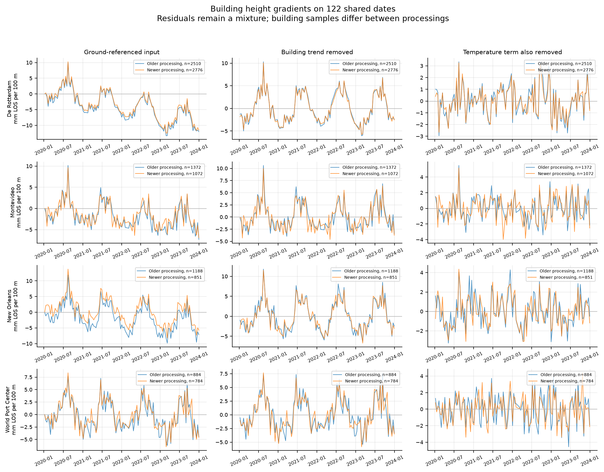
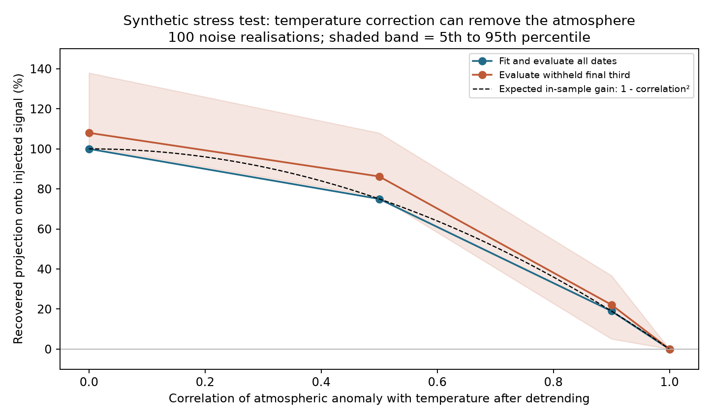
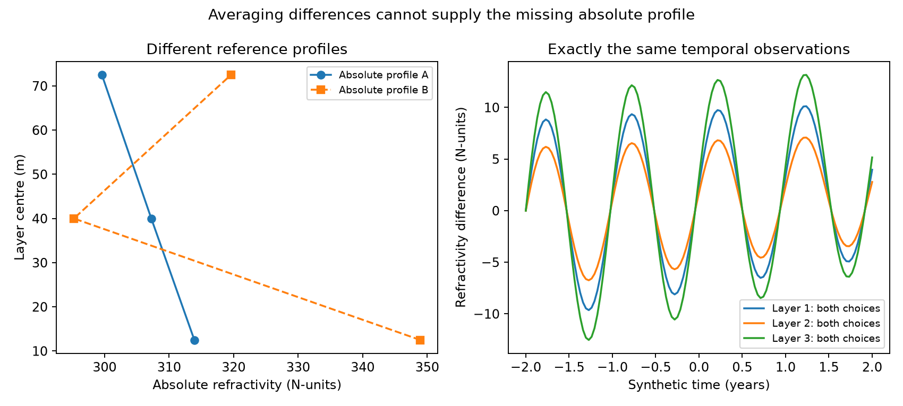

Can the corrections preserve the atmosphere?
The spatial reference can be handled consistently. Separating building expansion from temperature-correlated atmosphere is still the harder problem.
Analysis dated 30 September 2026. These are diagnostic experiments, not a validated atmospheric retrieval.
The reference changes the zero, not every height contrast
We compared two TerraSAR-X processings on the same 122 dates, from January 2020 to December 2023. A local reference uses 499 unique matched ground pairs. Four alternatives use the original processor reference, each processing's own 0–5 m points, and the western and eastern halves of the shared ground set.
The complete contrast-based correction changes the final height gradient by less than 0.00000001 mm per 100 m across these choices. It retains a free spatial intercept and the same points and weights. A deliberately naive fit, without that protection, changes its temperature coefficient by up to 0.001934 mm/m/K.
This does not identify the original reference point or make the ground stable. It shows that a spatially uniform reference signal cancels from the tested height contrast. The ground selection includes low scatterers, not a surveyed zero at a single elevation.
What the building corrections remove
For each building we first remove point offsets and a building-specific time trend, including a height-dependent rate. We then estimate one temperature response from the height contrast. The baseline uses a 5 m height exclusion, a linear trend and a five-day temperature response time. The fitted coefficient is an effective response, not a measured material expansion constant.

| Processing | Building | Points | Detrended RMS | Corrected RMS | Point SD |
|---|---|---|---|---|---|
| 2014-2023 | De Rotterdam | 2510 | 3.27 | 1.33 | 1.76 |
| 2014-2023 | Montevideo | 1372 | 2.66 | 1.51 | 1.99 |
| 2014-2023 | New Orleans | 1188 | 3.69 | 1.58 | 1.79 |
| 2014-2023 | World Port Center | 884 | 2.93 | 1.70 | 1.99 |
| 2020-2026 | De Rotterdam | 2776 | 3.16 | 1.21 | 1.62 |
| 2020-2026 | Montevideo | 1072 | 2.58 | 1.56 | 1.82 |
| 2020-2026 | New Orleans | 851 | 3.42 | 1.50 | 1.57 |
| 2020-2026 | World Port Center | 784 | 2.83 | 1.59 | 1.70 |
RMS columns are mm LOS per 100 m height; point SD is the within-building residual spread in mm, averaged over dates. It is not an error bar for the estimated atmosphere. The aggregate data also give height spread and rate SD/percentiles. Rate metadata describe each source's full record, not a common-period comparison.
The building samples differ between processings. Too few tall-building points match uniquely for a strong point-for-point validation. The common dates and shared ground reference do not remove that limitation.
Test on dates that were not used to fit
We trained on 63 dates in 2020–2021 and evaluated the remaining 59 dates in 2022–2023. Baseline residual-gradient RMS is 1.71–2.21 mm/100 m. Alternative cutoffs (3/5/10 m), temperature response times (0/5/15 days), linear/quadratic trends and pointwise/building-constrained trends test sensitivity. A quadratic five-day case reaches 5.76 mm/100 m on withheld dates. More flexible detrending can extrapolate poorly.
Omitting one of the four buildings changes their equally weighted mean corrected gradient by 0.24–0.39 mm/100 m RMS. This is a sensitivity range, not a confidence interval. Ten-metre bins retain 5–9 supported bins per building and processing, each with at least twenty points. Bin differences remain conditional delay-gradient estimates; the radar export's sign and height datum still need confirmation.
A known atmosphere can disappear into the thermal fit
A synthetic experiment makes this test possible: add a known atmospheric signal to building motion and noise, run the correction, and measure how much of the injected pattern survives. We used 100 noise realisations at four controlled correlations between temperature and atmosphere after detrending.

At correlation 0.9, the in-sample gain is only 19%; the withheld-date median is 22.2%. Perfectly temperature-correlated atmosphere is removed entirely. Detrending also removes a linear atmospheric trend. A separate, deliberately unmodelled nonlinear expansion term produces a false atmospheric residual even when there is no varying atmosphere.
These experiments expose estimator limitations. They do not establish the atmospheric correlation or bias in Rotterdam. The next useful comparison is an independently constrained expansion model or a joint atmospheric/thermal model, tested against these same failure cases.
Averaging differences does not determine an absolute profile
For a temporal difference, ΔN(t) = N(t) − N(reference). Its average is mean(N) − N(reference). Unless the mean or one absolute profile is supplied independently, the reference profile remains undetermined.

Pressure and temperature assumptions therefore cannot yet turn this pilot into an observed humidity profile. A synthetic sensitivity calculation illustrates the dependence: with an assumed absolute refractivity, changing the temperature assumption by 1 K shifts inferred vapour pressure by about 0.295 hPa; changing the refractivity anchor by 10 N-units shifts it by about 2.224 hPa for that chosen example.
Reproduce and inspect
Methods, numerical results and limitations · VS Code workspace and notebook · Analysis code · Aggregate results.
The synthetic experiments run without radar access. The real-data run requires the authorised course datasets. Published real results include group sizes and spread; raw observations, point identifiers, coordinates and individual series remain excluded.